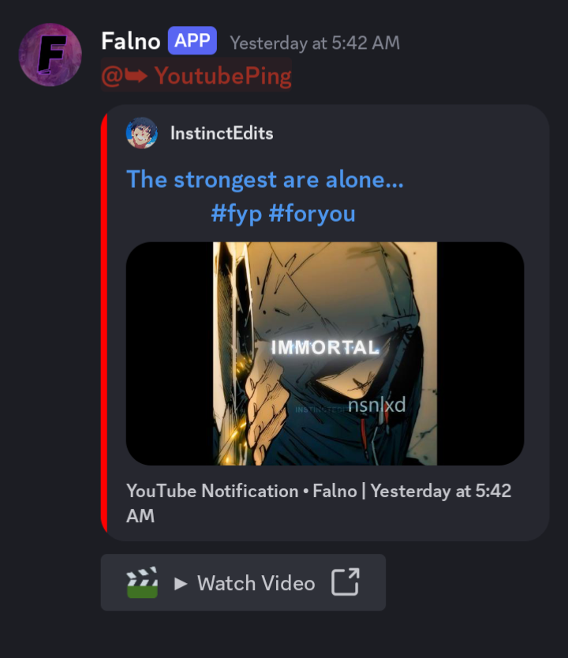
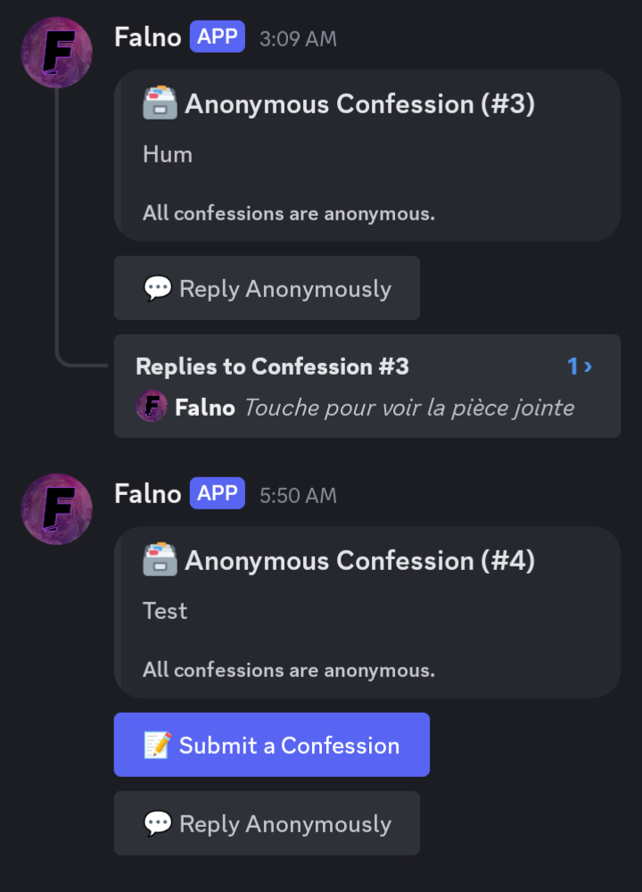
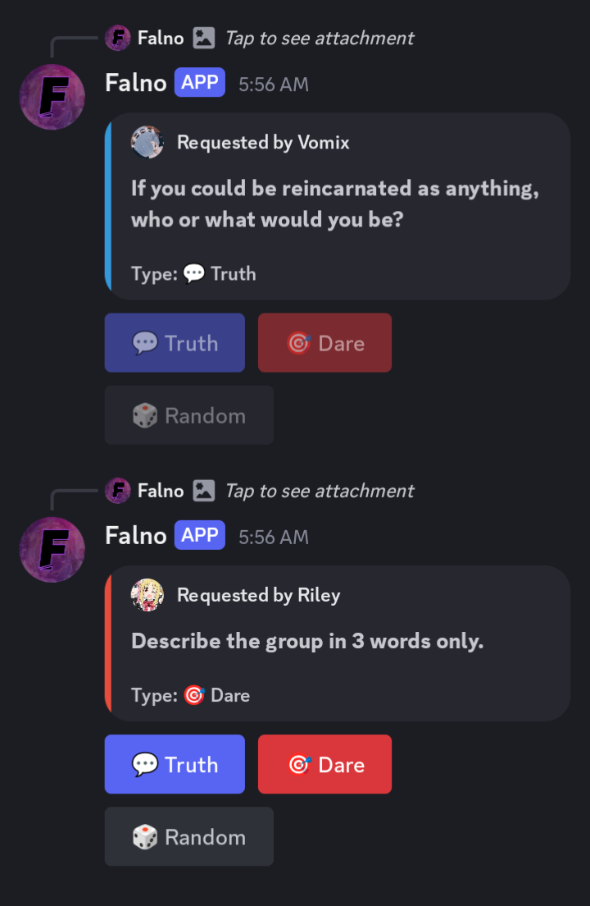
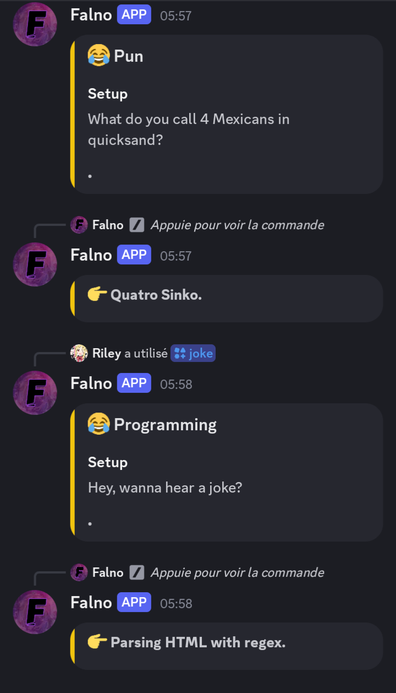
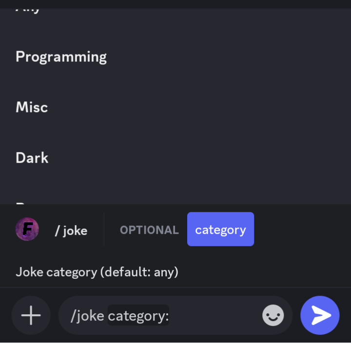
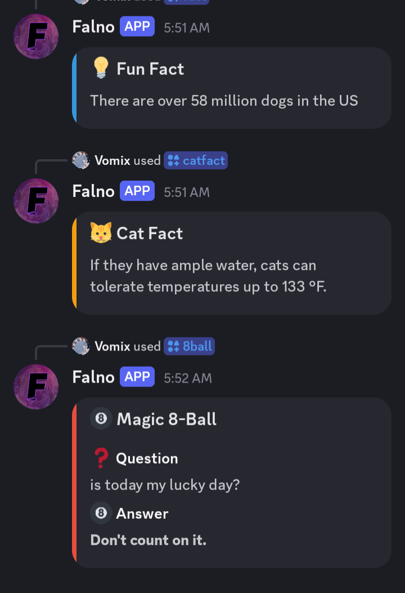
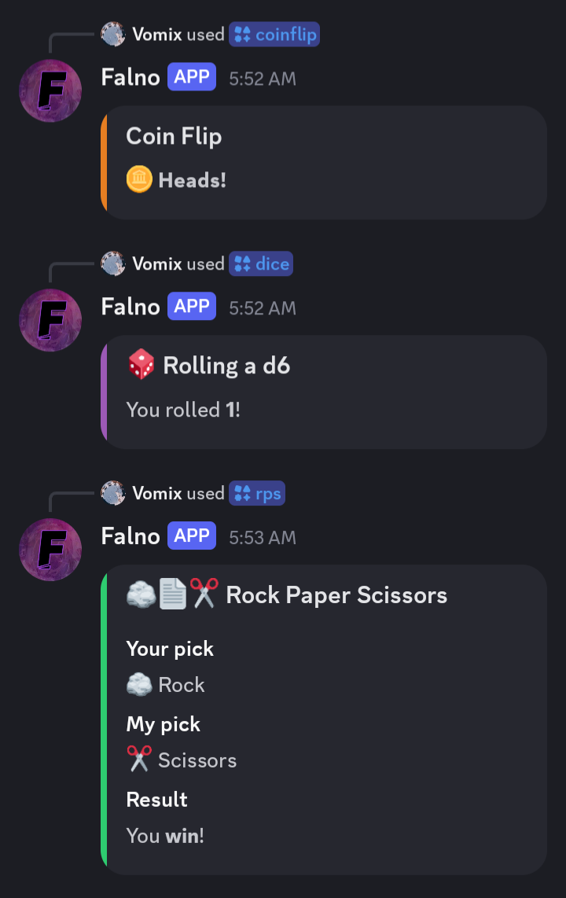

🔔 YouTube Alerts
Track your content updates seamlessly.

🤫 Confessions Suite
Secure and anonymous community feedback.

🎲 Truth or Dare
Classic games for your server members.


🎭 Jokes Command
Humor categories at your fingertips (Dark, Misc, Pun, Programming, Spooky, Christmas, Any...).


🎮 Mini-Games & Facts!
Engage your users with fun facts and mini-games.
Falno
Privacy Policy
Who we are
Falno Bot ("Falno", "the bot", "we") is a Discord bot developed and operated by Vomix , an independent developer. Falno is a public bot available to any Discord server.
What data we collect
Falno collects only what is strictly necessary to deliver its features. We do not collect personal information beyond what Discord provides during interactions.
Server-level data (stored persistently)
- Discord Server (Guild) IDs — to associate settings with a server
- Discord Channel IDs — to know where to post notifications, quotes, Truth or Dare, or confessions
- YouTube channel IDs and names — for the YouTube notifier feature
- The ID of the last notified YouTube video — to avoid duplicate notifications
- Custom notification messages configured by server admins
Confessions system data (stored temporarily)
- Discord User IDs of confession authors — stored only to enforce bans, never displayed publicly
- Confession and reply text submitted through the anonymous confession modal
- Optional image URLs attached to confessions
- Confession ban records (User ID + reason + timestamp), identified by an opaque ID (e.g. CB-0001)
Transient data (never stored)
- Message content of regular chat messages (the bot does not read or log general messages)
- Usernames, display names, or avatars (used only in real-time for embeds, never saved)
- Command inputs for fun commands (jokes, dice, 8-ball, facts, etc.)
How we use your data
Data collected by Falno is used exclusively to operate the bot's features:
- Delivering YouTube upload notifications to the correct Discord channels
- Sending daily quotes and Truth or Dare prompts to subscribed servers
- Operating the anonymous confessions system, including moderation tools (review, ban)
- Automatically cleaning up references to deleted Discord channels
We do not use your data for advertising, analytics, profiling, or any purpose unrelated to the bot's functionality.
Data storage and security
All data is stored in local JSON files on the server where Falno is hosted. Data is written asynchronously and protected against race conditions using file-level locks.
We take reasonable precautions to protect stored data.
Data is retained as long as your server has Falno installed and the relevant feature is enabled. Removing a feature (e.g. /removeconfess) deletes the associated data for your server. Removing Falno from your server does not automatically delete your server's stored data — contact us to request deletion.
Anonymous confessions and privacy
The confessions feature is designed to protect user anonymity. Confession authors are never identified publicly. However, the following limitations apply:
- A user's Discord User ID is stored internally to enable confession bans. This ID is accessible only to us, not to server moderators.
- Server moderators can see the text of a confession before it is approved (if a review channel is configured), but they cannot see who submitted it.
- Discord itself may log interactions at the platform level. This is outside our control. See Discord's Privacy Policy.
- Falno cannot guarantee anonymity if a confession contains self-identifying information.
Children's privacy
Falno is not directed at children under the age of 13 (or the minimum age required to use Discord in your jurisdiction).
Your rights
You may request the deletion of any data associated with your server or user account by contacting us. We will fulfill deletion requests within a reasonable timeframe.
Because confessions are stored without a public link to your identity, deletion of confession data may require verification.
Changes to this policy
We may update this Privacy Policy from time to time. The "Effective" date at the top of this page will reflect the most recent update. Continued use of Falno after changes constitutes acceptance of the revised policy.
Falno
Terms of Service
About Falno
Falno Bot ("Falno", "the bot") is a Discord bot developed by Vomix, an independent developer. Falno provides YouTube upload notifications, fun commands, a daily Quote of the Day, Truth or Dare, and an anonymous confessions system.
Falno is provided free of charge, as-is, for personal and community use on Discord servers.
Eligibility
You must meet Discord's minimum age requirement (13 years old, or older depending on your country) to use Falno. By using the bot, you confirm that you meet this requirement.
Server administrators who add Falno to their server are responsible for ensuring their members comply with these Terms.
Acceptable use
You agree to use Falno only for lawful purposes and in a manner consistent with Discord's Terms of Service and Community Guidelines.
The following uses are strictly prohibited:
- Using the confessions feature to harass, threaten, defame, or harm other users
- Submitting illegal content, including content that violates copyright, privacy, or local laws
- Attempting to abuse, exploit, or circumvent bot features (e.g. bypassing confession bans)
- Using the bot to spam, flood, or disrupt Discord servers
- Using the bot for any commercial purpose without explicit written permission from us
Confessions: The anonymous confessions feature must not be used to harm others. Server moderators are responsible for moderating their confession channels. We are not liable for the content of confessions submitted by users.
Server administrator responsibilities
By adding Falno to your server, the server owner and administrators agree to:
- Configure features responsibly and in a manner appropriate for their community
- Moderate the confessions channel, including using the review system and banning abusive users when necessary
- Ensure Falno is not used to violate the rights or safety of server members
- Provide their members with clear information about which features are enabled and how they work
Availability and modifications
Falno is provided on a best-effort basis. We do not guarantee uninterrupted availability. The bot may be offline for maintenance, updates, or due to issues beyond our control (e.g. Discord API outages).
We reserve the right to modify, suspend, or discontinue Falno or any of its features at any time, with or without notice.
We reserve the right to remove Falno from any server that violates these Terms.
Disclaimer of warranties
Falno is provided "as is" and "as available" without warranties of any kind, express or implied. We do not warrant that:
- The bot will be error-free or available at all times
- YouTube notifications will be delivered within any specific time frame
- The confessions system is completely secure or anonymous in all circumstances
Limitation of liability
To the fullest extent permitted by applicable law, we shall not be liable for any indirect, incidental, special, or consequential damages arising from your use of Falno, including but not limited to:
- Missed YouTube notifications or delayed alerts
- Content posted by users through the confessions feature
- Data loss resulting from bot downtime or file corruption
- Actions taken by server administrators using bot commands
Property
Content submitted by users through Falno (e.g. confessions, custom notification messages) remains the property of the respective user. By submitting content, you grant us a limited license to store and display that content solely for the purpose of operating the bot's features.
Changes to these terms
We may update these Terms of Service at any time. The "Effective" date at the top of this page reflects the most recent update. Continued use of Falno after changes are posted constitutes your acceptance of the revised Terms.
We recommend checking this page periodically for updates.